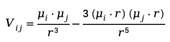
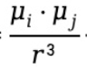
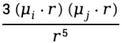
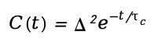
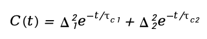

A conceptual introduction to how 2D IR spectroscopy reveals vibrational coupling, molecular fluctuations, and ultrafast dynamics in complex systems.
What is 2DIR?
Two-dimensional infrared (2D IR) spectroscopy is a powerful technique for studying how molecules move, fluctuate, and interact across ultrafast timescales.
Unlike conventional infrared spectroscopy, which mainly reports vibrational frequencies, 2DIR reveals how vibrational modes couple to one another and how molecular environments change over time. This allows researchers to directly probe hydrogen-bond rearrangement, solvation dynamics, structural fluctuations, and intermolecular interactions in complex systems. By combining frequency resolution with femtosecond time resolution, 2DIR provides a dynamic view of molecular behavior that is often inaccessible to traditional spectroscopic approaches.
From Static Structure to Molecular Dynamics
Molecules are never still. Hydrogen bonds continuously form and break. Solvent molecules reorganize around solutes. Proteins fluctuate between multiple conformations instead of remaining fixed structures. In liquids and biological systems, these motions happen on timescales of picoseconds (10⁻¹² s), and they directly govern how molecules recognize each other, how proteins fold and misfold, and how biological assemblies organize and dissolve. Conventional infrared spectroscopy measures which frequencies a molecule absorbs, providing a structural snapshot. Two-dimensional infrared spectroscopy (2D IR) goes further: by using sequences of femtosecond laser pulses and recording how vibrational responses evolve over time, it measures molecular motion directly, on the timescale it actually occurs.
From 1D IR to 2D IR
A conventional IR spectrum answers one question: what frequencies does this molecule absorb? The result is a one-dimensional plot of absorption versus frequency, which is useful for identifying functional groups and secondary structures, but is silent about dynamics. 2D IR asks a different question: after a molecule absorbs at one frequency, what happens next? The conceptual origins of 2D IR spectroscopy can be traced back to two-dimensional nuclear magnetic resonance (2D NMR), which transformed structural biology by revealing correlations between nuclear spins rather than measuring isolated resonances. Scientists soon realized that a similar idea could be applied to molecular vibrations. Traditional infrared spectroscopy measures vibrational frequencies associated with chemical bonds, providing valuable structural information about molecules and their local environments. However, many important molecular processes arise not from isolated vibrations, but from interactions between vibrational modes and fluctuations in the surrounding environment.
The challenge was experimental. Molecular vibrations evolve extremely quickly, often on femtosecond (10⁻¹⁵ s) timescales, requiring ultrafast infrared laser pulses capable of tracking molecular motion in real time. These technologies only became feasible in the 1990s with the development of femtosecond laser systems and ultrafast pump-probe spectroscopy. By 2000, the first true 2D IR experiments had been demonstrated, opening a new experimental window into molecular dynamics.
How Does 2D IR Work?
2D IR spectroscopy measures how vibrational excitations evolve and interact after a molecule is perturbed by ultrafast infrared laser pulses.

Figure 1. Principal of 2DIR
In a typical experiment, a sequence of femtosecond infrared pulses interacts with the sample in a carefully controlled manner. In modern 2DIR experiments, the excitation frequency axis is generated through Fourier transformation of the coherence time t1, rather than by directly scanning infrared frequencies. The first pair of pulses, often referred to as the pump pulses, excites a specific vibrational mode and establishes a vibrational coherence within the system. After a controlled waiting time, a third pulse probes how the molecular system has evolved. By systematically varying the time delays between ultrafast pulses and recording the resulting nonlinear vibrational response, researchers reconstruct a two-dimensional spectrum that reveals how vibrational modes are coupled and how molecular environments evolve over time. Unlike conventional IR spectroscopy, which primarily reports absorption frequencies, 2DIR reveals relationships between vibrational modes and how these relationships fluctuate within complex molecular environments.
Reading a 2D IR Spectrum
A 2D IR spectrum is displayed as a two-dimensional contour or pseudocolor plot. The horizontal axis is the excitation (pump) frequency; the vertical axis is the detection (probe) frequency. Signal intensity is shown by color or contour density, with positive and negative peaks arising from ground-state bleach and excited-state absorption, respectively.

Figure 2. Schematic of Cross Peaks in Two-Dimensional Infrared (2DIR) Spectroscopy: Cross peaks appear in the 2DIR spectrum when there is an interaction between two vibrational modes. The position and intensity of these peaks reveal the degree of coupling between different vibrational modes within the molecule.
Diagonal Peaks:fall along the line where excitation frequency equals detection frequency. They correspond to the same fundamental vibrations seen in conventional IR and reflect the response of individual modes to their local environments. At short waiting times, diagonal peaks are elongated along the diagonal, a signature of inhomogeneous broadening, meaning different molecules in the sample experience slightly different local environments and absorb at slightly different frequencies.
Cross Peaks:appear off the diagonal when two modes are coupled. Their presence is direct evidence of an interaction: two vibrations sharing a chemical bond, two groups within hydrogen-bonding distance, or two modes exchanging energy. The appearance, position, and evolution of cross peaks often reveal information that is hidden in traditional one-dimensional spectra, particularly in heterogeneous or dynamically fluctuating environments.
Diagonal peaks reveal individual vibrations, while cross peaks reveal interactions between them.
Spectral diffusion and molecular dynamics
As the waiting time t₂ between pump and probe pulses increases, the 2D lineshape evolves. Diagonal peaks that were elongated at early times become progressively more circular. This process, named spectral diffusion, reflects the loss of frequency memory as the molecular environment fluctuates and the initial frequency correlation decays.

Figure 3. A. Schematic of Spectral Diffusion and Lineshape Analysis in 2DIR. Energy exchange between the vibrational probe and the surrounding solvent leads to frequency decorrelation between the pump and probe pulses. B. The center line slope (CLS) decays exponentially as a function of t2 delay time, providing information about the local environment and relaxation dynamics.
The rate of this evolution is not arbitrary noise. It encodes the timescales of molecular motion.
For example:
how fast hydrogen bonds rearrange
how quickly solvent molecules reorganize around a solute
how rapidly a protein samples different conformational states
Slow spectral diffusion means a slowly fluctuating environment; fast spectral diffusion means rapid reorganization.
Quantitatively, spectral diffusion is described by the frequency-frequency correlation function (FFCF), which measures how a vibrational frequency at time zero correlates with the same frequency at a later time. Two experimental observables are commonly used to extract the FFCF: the nodal line slope (NLS) and the center line slope (CLS), both of which decay from 1 toward 0 as frequency correlation is lost. Fitting this decay to exponential or multiexponential models gives the timescales and amplitudes of environmental fluctuations directly.
Spectral diffusion reflects how rapidly molecular environments reorganize around a vibrational mode.
What 2D IR reveals in practice
Two-dimensional infrared spectroscopy is uniquely powerful because it connects molecular structure with molecular dynamics. Rather than providing only static vibrational frequencies, 2DIR reveals how molecular interactions evolve across ultrafast timescales and heterogeneous environments. This capability makes 2DIR particularly valuable for studying systems in which local structure, intermolecular interactions, and dynamic fluctuations are strongly coupled.
In aqueous and heterogeneous environments, spectral diffusion measurements provide insight into how rapidly local molecular environments fluctuate and lose structural memory. These dynamics are increasingly recognized as important functional variables in processes ranging from molecular recognition to biomolecular self-organization.
Studies have further shown that interfacial H-bond dynamics can differ dramatically from bulk environments, leading to altered molecular flexibility, energy relaxation pathways, and intermolecular interactions. Such effects are particularly important in crowded biological systems, soft materials, and confined molecular environments.
Hydrogen-Bond Dynamics and Solvation
Many molecular systems are governed by hydrogen-bond rearrangement and solvent fluctuations occurring on femtosecond to picosecond timescales. Because vibrational frequencies are highly sensitive to local electrostatic environments, 2DIR can directly probe how hydrogen-bond networks reorganize in liquids, interfaces, and biological systems.
Protein Structural Fluctuations and Biomolecular Organization
Proteins and biomolecular assemblies are intrinsically dynamic systems rather than rigid structures. Different secondary structures, such as α-helices and β-sheets, produce characteristic vibrational coupling patterns in 2DIR spectra, allowing researchers to probe conformational organization with high structural sensitivity.
Beyond static structure determination, 2DIR can directly monitor ultrafast conformational fluctuations, transient intermolecular interactions, and dynamically heterogeneous environments. These capabilities have become increasingly important for studying intrinsically disordered proteins, biomolecular condensates, membrane-associated assemblies, and nonequilibrium biological organization.
Because vibrational couplings are sensitive to molecular geometry and local environment, 2DIR provides a direct experimental approach for linking collective molecular organization with ultrafast structural dynamics.
Intermolecular Coupling and Molecular Recognition
Cross peaks in 2DIR spectra provide direct evidence of vibrational coupling, intermolecular interactions, and energy transfer pathways. These features can reveal how molecules interact within complex environments, including ligand binding, solvent-mediated interactions, and supramolecular assembly processes.
For example, recent work combining 2DIR spectroscopy with molecular simulations has shown that interfacial hydration dynamics within micellar environments can strongly influence molecular encapsulation, protein interactions, and dynamic molecular recognition. Changes in local solvation dynamics can alter not only molecular structure, but also the flexibility and fluctuation timescales of intermolecular interfaces.
Such studies highlight an emerging perspective in molecular science: molecular function is often governed not only by static structure, but by how molecular environments dynamically reorganize over time.
Ultrafast Chemical Exchange and Energy Flow
Because 2DIR directly probes nonequilibrium vibrational dynamics, it is particularly effective for studying chemical exchange processes, energy redistribution, and ultrafast intermolecular relaxation pathways.
Processes such as hydrogen-bond switching, solvent exchange, conformational interconversion, and vibrational energy transfer can all be monitored through time-dependent spectral evolution. By following how spectral correlations decay over time, researchers can quantify the rates of environmental fluctuations and molecular relaxation processes across complex systems.
Advanced Analysis: Lineshape, CLS, and FFCF
Cross peaks are unique to 2DIR and indicate interactions or energy transfer between different vibrational modes. Their presence and intensity reveal the degree of coupling between distinct vibrational modes within the molecule (Figure 2).
The intensity and position of cross peaks can be quantitatively described using the transition dipole coupling model:

where Vij is the coupling strength between vibrational modes ii and μ represents the transition dipole moment, and is the distance between the two modes.
The term

represents direct dipole-dipole coupling, inversely proportional to the cube of the distance, meaning closer vibrational modes exhibit stronger coupling.The directional component

accounts for orientation effects, maximizing when the dipoles align along the molecular axis.
By analyzing cross peaks, researchers can probe vibrational coupling, solvent effects, and internal energy redistribution. For instance, in strong hydrogen-bonded systems (e.g., phenol-toluene), cross peaks appear as sharp, isolated signals, reflecting stable and well-defined interactions. In weaker hydrogen-bonded systems (e.g., phenol-bromobenzene), cross peaks may split or weaken, indicating dynamic bond formation and dissociation.
2DIR Lineshape Analysis and Frequency-Frequency Correlation Function (FFCF)
Lineshape analysis helps interpret the dynamic processes occurring within a molecular system by examining peak shapes over different delay times t2. This provides critical insight into solvation dynamics, hydrogen bonding, and vibrational energy transfer.
At short t₂ times:The peak shape is primarily governed by inhomogeneous broadening, resulting in elliptical diagonal peaks. A slowly decaying FFCF indicates weak environmental fluctuations or long relaxation times.
At long t₂ times: Molecular dynamics lead to peak circularization as homogeneous broadening dominates. A rapidly decaying FFCF reflects fast environmental fluctuations and short relaxation times.
The time evolution of 2DIR peak shapes can be analyzed quantitatively to extract molecular fluctuation timescales. One of the most widely used approaches is the frequency-frequency correlation function (FFCF), which describes how vibrational frequencies lose memory of their initial environments over time.
-To quantify this, researchers extract the frequency-frequency correlation function (FFCF):
C(t) = ⟨δω(0) δω(t) ⟩
-Where C(t)C(t)C(t) measures how vibrational frequencies shift over time, indicating the rate at which molecular environments fluctuate.
-FFCF is often fitted to exponential decay functions, such as:

-Where Δ represents the static distribution of vibrational frequencies, and τc is the correlation time, reflecting how quickly the system relaxes.
In summary, despite the complexity of 2DIR, it provides unparalleled information, combining time resolution and frequency resolution to study molecular dynamics and static environments. This capability makes 2DIR a powerful tool for chemistry, materials science, and biology.
Center Line Slope (CLS) analysis is the most widely used and direct method for tracking spectral diffusion in 2DIR spectroscopy. It measures the degree of inhomogeneous broadening by analyzing how diagonal peaks narrow or evolve with increasing t₂.
CLS Calculation:
At each waiting time t₂, measure the probe frequency ωm corresponding to maximum peak absorption at each pump frequency ωτ.
Plot the peak positions and calculate the slope of this trend along the diagonal.
The CLS represents the slope of the peak’s center frequency as a function of the pump frequency.
CLS starts at 1 when the peak is fully stretched (maximum inhomogeneous broadening). CLS decreases toward 0 as the peak becomes circular (homogeneous broadening).The decay of CLS and NLS over t₂ reflects the decay of the frequency-frequency correlation function (FFCF), providing direct insight into the dynamics of the environment.
Extracting the FFCF from Spectral Data
FFCF is a critical parameter describing how molecular vibrational frequencies fluctuate over time, providing a window into the dynamic processes occurring within a system. The FFCF is defined as:
C(t) = ⟨δω(0) δω(t) ⟩
where δω(t) represents the deviation of the vibrational frequency from its mean value at time t.
Exponential Decay Form of FFCF:
Δ represents the amplitude of static frequency distribution (inhomogeneous broadening).
τc is the correlation time, describing the timescale of environmental fluctuations.
In more complex systems, biexponential or multiexponential fits are often required to capture the contributions of multiple relaxation processes:

This model is essential for disentangling fast solvent relaxation from slower conformational changes.
By applying lineshape analysis techniques, 2DIR provides unparalleled insight into molecular interactions, enabling the study of dynamic processes such as hydrogen bonding, solvation, and protein folding.
Frequently Asked Questions About 2D IR
1.What does 2D IR actually measure?
2D IR measures how vibrational modes interact and evolve over ultrafast timescales. Unlike conventional IR spectroscopy, which mainly reports vibrational frequencies, 2DIR reveals couplings, energy transfer, structural fluctuations, and environmental dynamics.
2.Why is 2D IR considered a “dynamic” spectroscopy?
Because 2DIR tracks how vibrational frequencies change over femtosecond to picosecond timescales. This allows researchers to directly observe processes such as hydrogen-bond rearrangement, solvation dynamics, and conformational fluctuations.
3.What are cross peaks in a 2D IR spectrum?
Cross peaks appear when two vibrational modes interact or exchange energy. They provide direct evidence of vibrational coupling, molecular proximity, or structural correlations within a system.
4.What is spectral diffusion?
Spectral diffusion describes how a molecule’s vibrational frequency changes over time due to fluctuations in its local environment. It reflects the dynamics of surrounding molecules, solvent rearrangement, and hydrogen-bond fluctuations.
5.Why is 2D IR useful for studying biological systems?
Many biological processes are governed by transient interactions and structural fluctuations occurring on ultrafast timescales. 2DIR can directly probe these dynamics in proteins, membranes, condensates, and hydration networks.